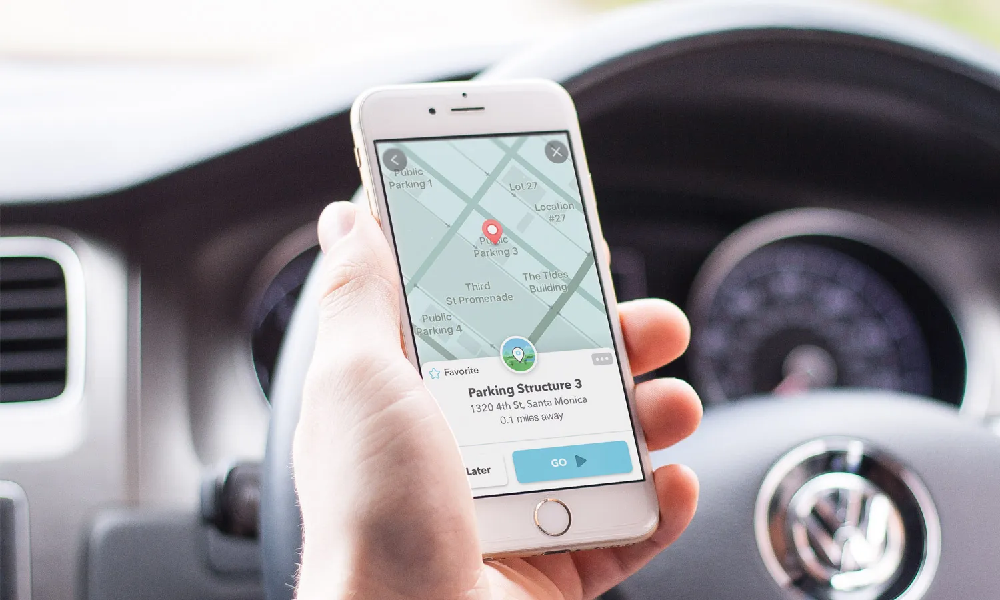

In this project, we developed a machine learning model to predict monthly user churn on the Waze navigation app, progressing from logistic regression to tree-based ensemble methods.

In this project, we developed a machine learning model to predict employee turnover, using Decision Tree and Random Forest classifiers.
In this project, we analyzed bike-sharing usage data from Cyclistic to identify behavioral differences between casual riders and annual members. The analysis provided data-driven insights and marketing recommendations.

Using the clean data from the Data Cleaning Project, we performed an exploratory analysis to identify significant trends in layoffs by year, country, and industry.
Using the clean data from the Data Cleaning Project, we performed an exploratory analysis to identify significant trends in layoffs by year, country, and industry.
We developed a Tableau-based dashboard utilizing a public Airbnb dataset that highlights listing availability and average prices for various types of properties in the U.S.